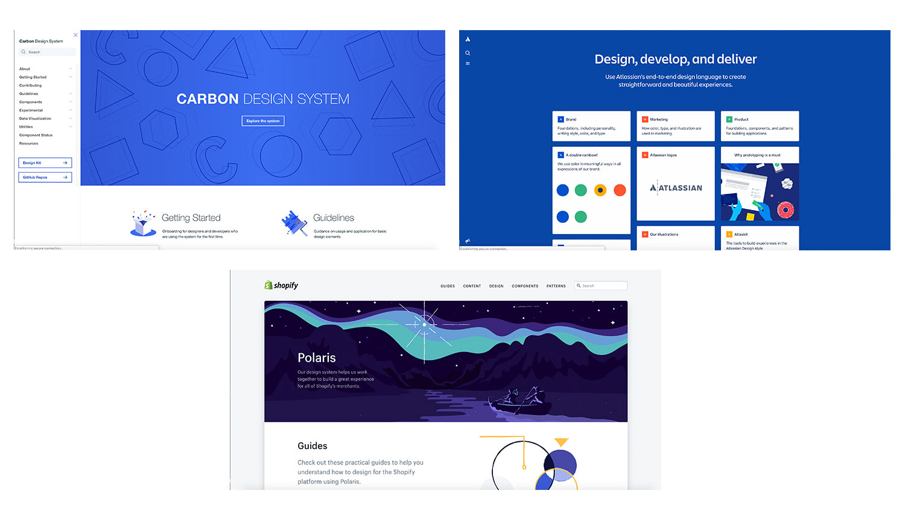

FrescoPlay design system
A unified set of design rules and patterns.
From Typography, layouts, grids, colours, icons, components and coding conventions to voice and tone, style-guide,
documentation a design system brings all of those together in a way that allows the entire team to learn, build and grow.
Design systems will give us the flexibility we need to work with the unknown devices of the future. It may be a change in procesws, but it shouldn't be too much of a difference
in thinking. We need to keep experimenting and communiacting, particularly in the area of design, as good user experiences are the true sign of whether our products are a success. Design language or design systems
is more than just UI style guides. It is also a way the team works and explains the team values & principles.
Vision
To create consistency across the platform and to create a unified system where every developer and designer will look up to pull any required component from the library.
TO scale the product withiun the team by making them design appealing interactions rather than creating new components every time. To affect how a product team appraches
design as a whole. With a solid, consistent, well explained and thought out system, the visual aspect of creating a design becomes more modular. My aim was to provide
a library of components that can be downloaded locally any time and included in the local folder work again and to improve the re-usability of Icons and symbols across the workflow.
Challenges
Reducing the fonts and typefaces makes a change in the visual order of the system.
Different design theories and visual languages are available across the team. One product has multiple design languages.
The product itself has a voice and tone and the product works based on a business model. A design system has to combine all of these and create a unified system.
Do an audit of the visual components in the system.
A UI Kit of the system already had a set of components and the new design system should comprise these components plus components defining the visual langugae and voice and tone and branding.
Create a library of nested symbols which will consume a lot of time and has to be updated as a parent library for each of the design file associated with the product.
Challenges
▪️ Auditing eavh and every component of the product.
▪️ Normalising all the components and reducing the number of symbols created in each file.
▪️ Framing a set o fundamentals for the product's visuals.
▪️ Creating a simple library of components which can be reused across the system.
▪️ Conducting competitive research.
Goals & Objectives
▪️ To make the design system a living document that contains all of the visual assets. Providing front-end developers & engineers
a collection of reusable HTML & SCSS partials to build websites and user interfaces. Adopting the library enables developers to
use consistent markup, styles and behaviour in prototype and production work.
▪️ Web and software experiences should be accessible for everyone.
▪️ Create a set of brand guidelines called fundamentals based on which the design system's components behave and organise..
▪️ Creating a simple library of components which can be reused across the system.
▪️ Creating a set of library components which eliminates the creation of new symbols all the time.
▪️ Design a set of patterns or template pages which gives a clear understanding of how to combine guidelines and use the component library.

Process
After doing a research on the existing design systems of few products, I've known the importance of the design system to a product.
The design system of FrescoPlay has started by auditing the current components present int he application. The screenshots of the components have been took
and the properties of each and every component has been recorded. After conducting the audit several instances have been identified where repititive elements
have been found. The typefaces audit of the FrescoPlay have been recorded so precise in order to eliminate more number of typefaces and weights.
Atomic Design System
According to atmoic design system every page in an application is made up of templates which are basically group of organisms which individually is a group of molecules.
These molecules are formed by combining the individual atoms. The fresco play application's page is formed by combining the atoms, molecules, organisms, templates respectively.
This can be done in sketch by using Nested symbols. BUt clear convention and identification of layers(atoms) is required while creating a nested symbol. After the symbols(atoms)
in sketch are used to form a nested symbol(molecules). Now it's time for the molecules form templates.

The auditing and the components exploration helped me learn organising and defining design rules which will align with the developer's workflow also.
Thanks for your time for making till the end.
Go back to Home for more works.